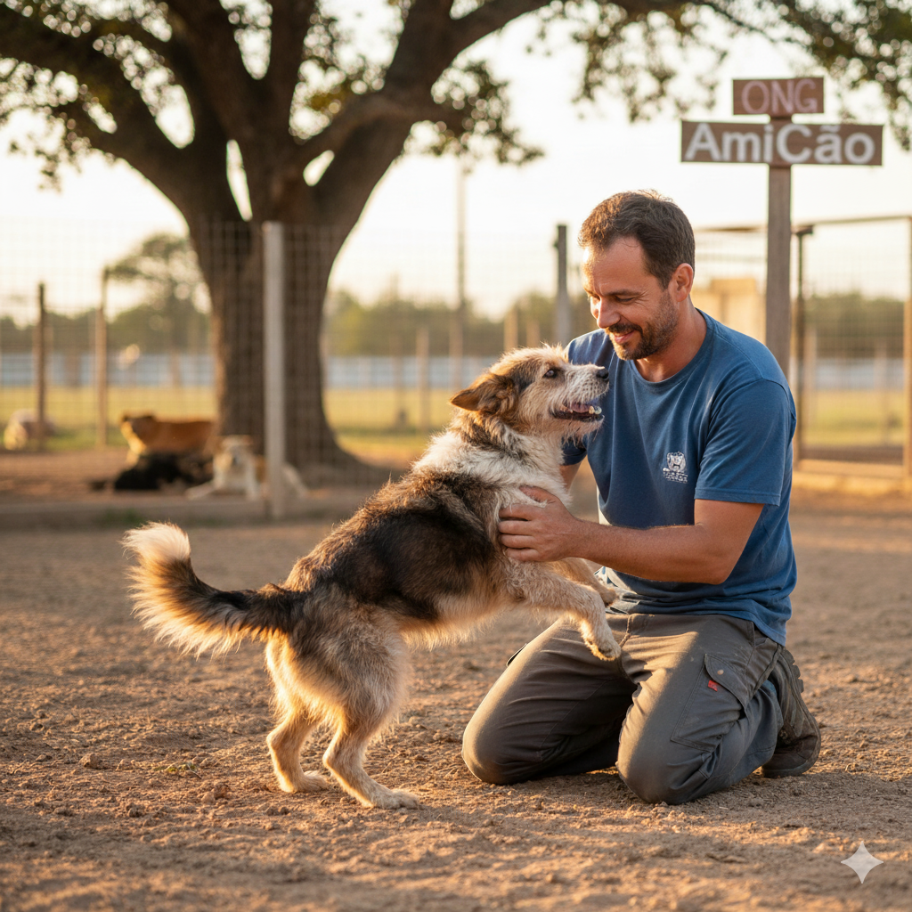

Seja um Voluntário
O voluntariado é a alma da nossa ONG. Precisamo de ajuda em diversas frentes:
- Passear e socializar com os cães.
- Ajudar na limpeza e organização do abrigo.
- Ser lar temporário para animais em recuperação.
- Ajudar em feiras de adoção.